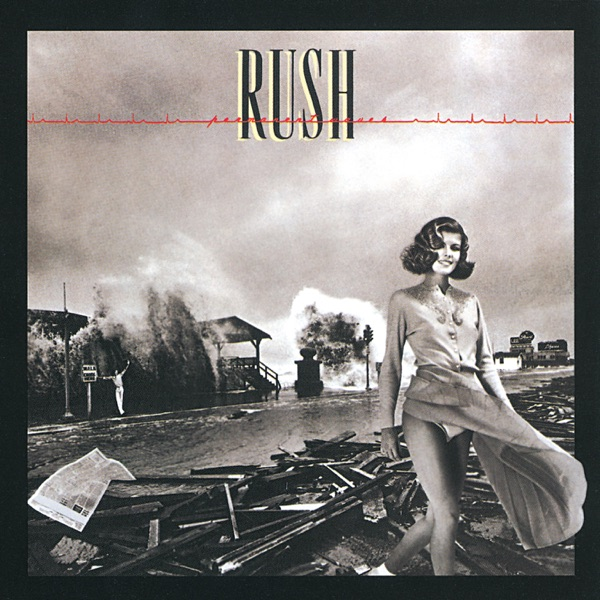

Permanent Waves
Rush
Upgrade idea: Your original 1980 Howie Weinberg cut (MASTERDISK HW) is already one of the best-sounding pressings of the album. A highly regarded alternative cut is the original Canadian pressing mastered by Bob Ludwig (RL MASTERDISK in runout), prized for its punchier bass and drums. For high-resolution digital playback on your Sony UBP-X700, look for the 2011 high-res 24-bit/96kHz digital remaster or the 1989 MFSL Gold CD (UDCD 505).
- Original release
- 1980
- Pressing year
- 1980
- Country
- US
- Format
- Vinyl LP, Album, Stereo (72 - PRC Richmond Pressing)
- Label / Cat#
- Mercury – SRM-1-4001 / Mercury – 9110.143
- Genres
- Rock
- Styles
- Prog Rock, Hard Rock
- Discogs release
- 4561403
- Discogs master
- 7540
- Apple Music
- Permanent Waves (Remastered)
- Wikipedia
- Permanent Waves
Production notes
Tracklist (Discogs)
| A1 | The Spirit Of Radio | 4:54 |
| A2 | Freewill | 5:23 |
| A3 | Jacob's Ladder | 7:50 |
| B1 | Entre Nous | 4:37 |
| B2 | Different Strings | 3:50 |
| Natural Science | 9:27 |
Tracklist (Apple Music)
| 1 | The Spirit of Radio | 4:58 |
| 2 | Freewill | 5:23 |
| 3 | Jacob's Ladder | 7:29 |
| 4 | Entre Nous | 4:37 |
| 5 | Different Strings | 3:49 |
| 6 | Natural Science | 9:16 |
Personnel & credits
- Rush — Arranged By [Arrangements By]
- Terry Brown — Arranged By [Arrangements By]
- Hugh Syme — Art Direction, Graphics
- Peter George (3) — Artwork [Colour Collaboration]
- Geddy Lee — Bass Guitar, Synthesizer [Oberheim Polyphonic; OB-1; Mini Moog; Taurus Pedal Synthesizers], Vocals
- Ou La La — Costume Designer [Covergirl Couturiere]
- Bill Collins (15) — Crew [Concert Rigging]
- Sam Charters (2) — Crew [Personal Shreve]
- Harry Dilman — Crew [Projectionist]
- Greg Connolly — Crew [Stage Monitor Mixer]
- Arthur McLear — Crew [Transported By The Skilled Hands Of]
- Gene Guido — Crew [Transported By The Skilled Hands Of]
- Pat Lines — Crew [Transported By The Skilled Hands Of]
- Tim Lewis (20) — Crew [Transported By The Skilled Hands Of]
- Tom Whittaker (4) — Crew [Transported By The Skilled Hands Of]
- Hugh Syme — Design Concept [Cover Concept]
- Neil Peart — Design Concept [Cover Concept]
- Neil Peart — Drums, Timpani [Tympani], Timbales, Bells [Orchestra Bells], Tubular Bells, Wind Chimes, Bell Tree, Triangle, Crotales
- Alex Lifeson — Electric Guitar [Six String Electric Guitar], Twelve-String Guitar [Twelve String Electric Guitar], Acoustic Guitar [Six String Acoustic Guitar], 12-String Acoustic Guitar [Twelve String Acoustic Guitar], Synthesizer [Taurus Pedals]
- Ian Grandy — Engineer [Concert Sound Engineer]
- Adam Moseley — Engineer [Mixed, Assisted By]
- Craig Milliner — Engineer [Mixed, Assisted By]
- Geddy Lee — Engineer [Mixed, Assisted By]
- Steve Short — Engineer [Mixed, Assisted By]
- Terry Brown — Engineer [Mixed, Engineered By]
- Paul Northfield — Engineer [Recorded, Engineered By]
- Robbie Whelan — Engineer [Recorded, General Assistance]
- Tony Geranios — Equipment [Guitar And Synthesizer Maintenance]
- Moon Records — Executive-Producer [Executive Production]
- Hugh Syme — Guest [Special Featured Guest], Featuring [Special Featured Guest], Piano
- Howie Weinberg — Lacquer Cut By
- See Factor — Lighting [Concert Lighting]
- Geddy Lee — Lyrics By
- Neil Peart — Lyrics By
- Ray Danniels — Management
- SRO Productions — Management
- Vic Wilson — Management
- Ray Staff — Mastered By
- Alex Lifeson — Music By
- Geddy Lee — Music By
- Daisy The Dog — Other [Inspiration], Vocal Coach [Vocal Coaching]
- Mike Deere — Other [Pilot Of Juliet Foxtrot Kilo]
- Deborah Samuel — Photography By
- Fin Costello — Photography By
- Flip Schulke — Photography By
- Rush — Producer [Produced By]
- Terry Brown — Producer [Produced By]
- Michael Hirsh — Stage Manager
- Erwig Chuapchuaduah — Steel Drums
- Larry Allen (2) — Technician [Centre Stage Technician]
- Ted McDonald — Technician [Electrical Technician]
- Skip Gildersleeve — Technician [Stage Left Technician]
- Liam Birt — Technician [Stage Right Technician]
- Howard Ungerleider — Tour Manager [Road Manager], Lighting Director, Crew [Assistant To Mr. Shreve]
Identifiers
- Rights Society: ASCAP
- Rights Society: CAPAC
- Pressing Plant ID: 72 (Labels)
- Other: 704 (Fabrication code, back cover, inner sleeve)
- Matrix / Runout: SRM-1-4001-A-PRC-R-2-1-1111 MASTERDISK HW (Side A runout, var. 1)
- Matrix / Runout: SRM-1-4001-B-PRC-R-3-1-11 MASTERDISK HW (Side B runout, var. 1)
- Matrix / Runout: SRM-1-4001-A-PRC-R-1-1-111 MASTERDISK HW (Side A runout, var. 2)
- Matrix / Runout: SRM-1-4001-B-PRC-R-2-11-11 MASTERDISK HW (Side B runout, var. 2)
- Matrix / Runout: SRM-1-4001-A-PRC-R-1-3-1-11 MASTERDISK HW (Side A runout, var. 3)
- Matrix / Runout: SRM-1-4001-B-PRC-R-2-11-11 MASTERDISK HW (Side B runout, var. 3)
- Matrix / Runout: SRM-1-4001-A-PRC-R-1-1-1 MASTERDISK HW (Side A runout, var. 4)
- Matrix / Runout: SRM-1-4001-B-PRC-R-2-11-1 MASTERDISK HW (Side B runout, var. 4)
- Matrix / Runout: SRM-1-4001-A-PRC-R-2-11-111 MASTERDISK HW (Side A runout, var. 5)
- Matrix / Runout: SRM-1-4001-B-PRC-R-2-1-111 MASTERDISK HW (Side B runout, var. 5)
- Matrix / Runout: SRM-1-4001-A-PRC-R-1-4-7 MASTERDISK HW (Side A runout, var. 6)
- Matrix / Runout: SRM-1-4001-B-PRC-R-3-1-11-02 MASTERDISK HW (Side B runout, var. 6)
- Matrix / Runout: SRM-1-4001-A-PRC-R-2-1-111 MASTERDISK HW (Side A runout, var. 7)
- Matrix / Runout: SRM-1-4001-B-PRC-R-3-11-111 2 MASTERDISK HW (Side B runout, var. 7)
- Matrix / Runout: SRM-1-4001-A-PRC-R-1-1-1 MASTERDISK HW (Side A runout, var. 8)
- Matrix / Runout: SRM-1-4001-B-PRC-R-3-1-11 MASTERDISK HW (Side B runout, var. 8)
- Matrix / Runout: SRM-1-4001-A-PRC-R-2-1-1 MASTERDISK HW (Side A runout, var. 9)
- Matrix / Runout: SRM-1-4001-B-PRC-R-1-1-1 MASTERDISK HW (Side B runout, var. 9)
- Matrix / Runout: SRM-1-4001-A-PRC-R-1-4-11 MASTERDISK HW (Side A runout, var. 10)
- Matrix / Runout: SRM-1-4001-B-PRC-R-2-11-1111-4 MASTERDISK HW (Side B runout, var. 10)
- Matrix / Runout: SRM-1-4001-A-PRC-R-2-1-11 MASTERDISK HW (Side A runout, var. 11)
- Matrix / Runout: SRM-1-4001-B-PRC-R-1-1-11 MASTERDISK HW (Side B runout, var. 11)
- Matrix / Runout: PRCW SRM4001 ACH8-1-11 CCT (Side A runout, var. 12)
- Matrix / Runout: SRM-1-4001-B-PRC-R-3-1-11 MASTERDISK HW (Side B runout, var. 12)
Notes
[l=PRC Recording Company, Richmond, IN], pressing denoted by plant # (72) in label rimtext and "PRC" etched in runouts. Remainder of runouts etched, mastering stamped.
Jacket printing variant to [r=31103120], with fabrication code "704" on back cover bottom left and inner sleeve bottom right, denoting [l=Album Graphics Inc.] fabrication.
Custom inner sleeve contains lyrics and credits.
Track B3 appears without subtracks on label or back cover.
Catalog number SRM-1-4001 on front and back cover, spine, labels; catalog number 9110.143 on back cover, labels.
Recorded at Le Studio, Morin-Heights, Quebec, during September and October 1979.
Mixed at Trident Studios, Soho, London, in November 1979.
Mastered at Trident.
℗ © 1980 Phonogram, Inc., a Polygram Company
All lyrics © 1980, CORE Music Publishing (ASCAP) CAPAC Canada. All Music published CORE Music Publishing (ASCAP) CAPAC Canada.
Notes & discrepancies
- Track count differs: Discogs=5, Apple Music=6
Released on January 1, 1980 by Mercury Records, Permanent Waves is the seventh studio album by Canadian rock band Rush. It represents a major stylistic turning point for the band, shifting from the extended fantasy/sci-fi suites of A Farewell to Kings and Hemispheres toward tighter, more accessible songwriting that incorporated elements of new wave and reggae. Co-produced by the band and Terry Brown, the album was recorded at Le Studio in Morin-Heights, Quebec—a picturesque studio that would become the band’s creative home throughout the 1980s. The record yielded some of the band’s most enduring radio hits, including “The Spirit of Radio” and “Freewill,” alongside progressive showpieces like “Jacob’s Ladder” and the multi-part epic “Natural Science.”
The album’s production, engineered by Paul Northfield, is highly celebrated by audiophiles for its punchy dynamics, transparent high-end, and powerful bass response. The mixing was completed at Trident Studios in London. While the custom inner sleeve lyric sheet credits mastering to Ray Staff at Trident, the original US Mercury pressings were actually mastered stateside at Masterdisk in New York.
About this 1980 PRC Richmond pressing (LP, Stereo): Mercury Records catalog
SRM-1-4001(and international catalog number9110.143on back cover/labels). This copy was pressed at the PRC Recording Company’s plant in Richmond, Indiana, identified by the pressing plant code72printed on the labels and thePRC-Retching in the deadwax.The lacquers for this pressing were cut by mastering legend Howie Weinberg at Masterdisk (evident from the
MASTERDISK HWinscriptions). Weinberg’s cut of Permanent Waves is widely considered by collectors to be the definitive sounding version of the album on vinyl, praised for its clarity, soundstage width, and bass definition.Your copy’s Side A runout contains the matrix
SRM-1-4001-A-PRC-R-1-4(inscribed on some copies asSRM-14001-A-PRC-R-1-4) alongside the stampedMASTERDISK HWcredits, indicating a master metalwork transfer plated for PRC Richmond’s pressing lines.